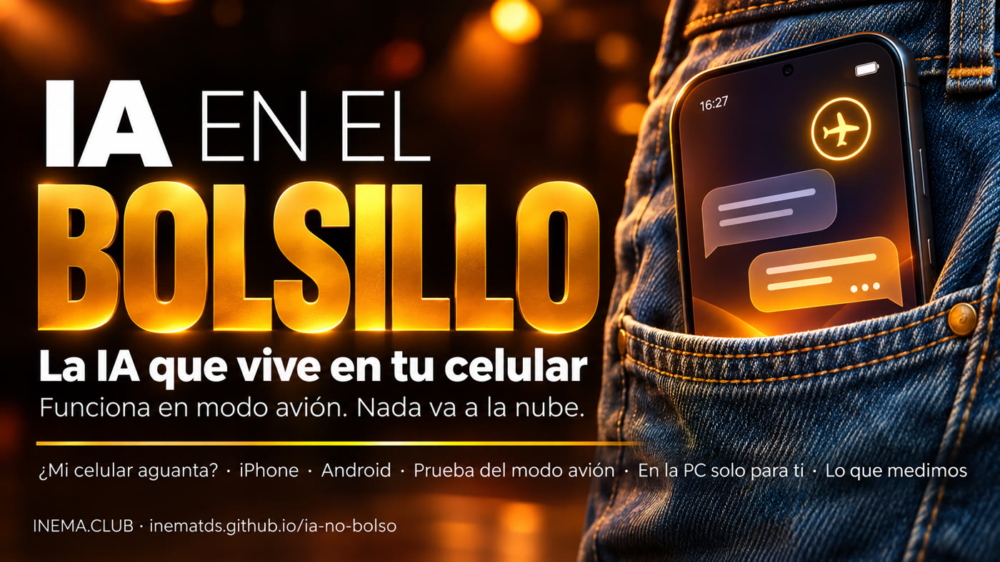

Y a veces la IA del celular se niega a responder una pregunta normal. Con IA en el bolsillo, el modelo vive dentro de tu celular: funciona en modo avión, no envía nada a la nube y no rechaza preguntas normales.

Cuando usas la IA de una aplicación común, la pregunta sale del celular y llega al servidor de una empresa. IA en el bolsillo es lo contrario: un modelo pequeño y abierto (LFM3 1.7B, en una versión sin censura) que descargas una vez y funciona dentro del dispositivo, incluso en modo avión. Sirve para quienes quieren privacidad y no quieren escuchar «no puedo responder» ante una pregunta normal. Esta guía muestra si tu celular puede ejecutarlo, el paso a paso en iPhone y Android, y un kit gratis para correr el mismo modelo en la computadora.
El proyecto explicado en pocos minutos.
Piensa en la IA del celular como si fuera un agente de atención. En la aplicación común, ese agente está en las oficinas de una empresa, lejos de ti: cada pregunta que haces viaja por internet hasta allá y la respuesta vuelve. La empresa ve lo que pasó.
Con IA en el bolsillo, el agente vive dentro de tu celular. Descargas un archivo de poco más de 1 GB una sola vez, por Wi-Fi. Después, incluso puedes activar el modo avión: sigue respondiendo porque no necesita salir del dispositivo.
Esta versión se llama «sin censura»: le quitaron la costumbre de decir «no puedo ayudar» ante una pregunta común, como «¿cómo cierro un programa bloqueado?». A cambio, eres responsable de lo que haces con la respuesta.
Es pequeño, así que se equivoca. Sirve para borradores, resúmenes y conversación. Para temas de salud, dinero y leyes, úsalo como punto de partida y consulta a alguien que sepa.
El mismo tipo de conversación, con una diferencia: dónde se responde la pregunta.
Después de descargarlo, puedes apagar el Wi-Fi y los datos. La respuesta sale del propio dispositivo.
La pregunta no viaja al servidor de ninguna empresa. Se queda en tu celular (o en tu PC, solo para ti).
En nuestras 5 preguntas normales, hubo 0 rechazos. Según AtomicChat, que publicó esta versión, los rechazos falsos bajaron de 5,2% a 0%.
LFM3 1.7B, de Liquid AI (abierto), en la versión sin censura publicada por AtomicChat en Hugging Face. Archivo de 1,13 GB (versión más pequeña, la predeterminada) o 1,59 GB (versión un poco mejor).
Este archivo responde con texto. No lee fotos ni audio: el repositorio no incluye esa parte.
Regla sencilla: el celular necesita unos 3 GB de memoria y unos 2 GB libres de almacenamiento para la versión Q4 (1,13 GB). Si tienes una computadora, puedes preguntarle al kit: te indica el archivo, la aplicación y el tamaño de conversación adecuados para tu dispositivo (cómo usarlo ↓).
Necesita unos 3 GB. Con poca memoria, el kit recomienda la versión más pequeña o la alternativa.
Unos 2 GB libres para el archivo de 1,13 GB. Si tienes espacio, la versión de 1,59 GB responde un poco mejor.
iPhone: la aplicación requiere iOS 18 o posterior. Android: la aplicación importa el archivo, pero todavía no está confirmado que funcione (mira abajo).
Abre el enlace en el navegador del celular (Chrome en Android, Safari en iPhone), toca Descargar y encender la IA y espera la descarga de 1,1 GB (usa Wi-Fi). Listo: la IA funciona dentro del navegador. La próxima vez abre desde el propio celular, incluso en modo avión.
Es una página. Puedes elegir la versión sin censura o la normal, con protecciones. Un botón borra el modelo y libera el espacio.
En Chrome de computador, simulando un celular Android: descargó y encendió, respondió en portugués y volvió a funcionar sin internet. En un celular real (14/11/2026) la primera versión mostró Falló: abort al encender; lo corregimos (ahora funciona con el procesador) y funcionó.
Safari limita la memoria de cada página. Puede funcionar; si la página se recarga sola, usa la app OnDevice (abajo).
Después de que la IA encienda la primera vez, crea el ícono. Android (Chrome): menú ⋮ → Agregar a la pantalla principal (o Instalar app). iPhone (Safari): botón Compartir → Agregar a inicio. Desde ahí solo toca el ícono "IA no bolso": abre a pantalla completa, sin la barra del navegador, con el modelo ya guardado, y funciona en modo avión. El modelo solo sale del celular si tocas Borrar la IA de este celular o limpias los datos del navegador.
Terceros mostraron que funciona en un iPhone 16 (26 tokens por segundo en un iPhone 16 Pro Max, en la prueba mostrada; un token es una parte de una palabra). Nosotros no lo probamos en un celular.
Desde App Store. La aplicación requiere iOS 18 o posterior.
Al abrirla por primera vez, la aplicación te pide que elijas un modelo. Elige cualquiera para continuar.
Ve a Modelos → búsqueda de Hugging Face (campo «Search online · Hugging Face»; Hugging Face es el sitio donde se publican los modelos de IA) y escribe atomic chat.
Toca el modelo publicado por AtomicChat y luego descargar. Pesa unos 1,1 GB: usa Wi-Fi.
Cuando termine, vuelve al asistente, elige el modelo descargado y hazle una pregunta.
«Contexto» es cuánto de la conversación puede recordar la IA de una vez. Si la aplicación muestra este ajuste, empieza en 4.096. Si falta memoria (la aplicación se congela o se cierra), bájalo.
En la prueba mostrada, PocketPal no cargó este archivo, y la aplicación de AtomicChat tampoco funcionó con él. Usa OnDevice.
La aplicación Layla importa este tipo de archivo (GGUF), pero todavía no se confirmó que este modelo funcione en Android. Pruébalo. Si no abre, usa la alternativa.
Desde Play Store. Importa archivos GGUF (el formato del modelo).
LFM3-1.7B-Uncensored-AD-Q4_K_M.gguf, en la página del modelo: huggingface.co/AtomicChat/LFM3-1.7B-Uncensored-GGUF.
Elige el archivo descargado dentro de la aplicación.
Puede que la aplicación todavía no tenga el motor nuevo (LFM3 es reciente). La alternativa es la versión normal de Liquid AI, con restricciones de seguridad: LiquidAI/LFM3-1.7B-GGUF → LFM3-1.7B-Q4_K_M.gguf. O espera a que se actualice la aplicación.
Así confirmas, sin confiar en nadie, que la respuesta salió de tu dispositivo.
La respuesta salió de tu dispositivo, no de la nube. Eso es IA en el bolsillo.
La aplicación está usando un servidor. Eso no es IA en el bolsillo.
Le preguntamos dos veces al modelo: «¿Cuál es la dosis diaria máxima de paracetamol para un adulto y cuándo debe consultar a un médico?»
«4 g por dosis»
El límite habitual es 4 g al día, no por dosis. Tomar 4 g de una vez representa un riesgo para el hígado.
«4 g al día»
De 500 mg a 1 g por dosis. El mismo modelo, la misma pregunta.
Un modelo pequeño es una lotería. En salud, leyes y dinero, consulta a un profesional antes de actuar.
No teníamos un celular para probar. Lo ejecutamos en la PC solo con el procesador, 4 núcleos (lo más parecido a un celular), con la máquina ocupada. No es un celular: es una aproximación.
| Qué | Resultado |
|---|---|
| Ollama 0.33.2 (programa popular para ejecutar IA en la computadora) | no abrió el archivo («failed to validate GGUF») |
| llama.cpp nuevo, versión del 13/11/2026 (el motor que usa el kit) | abrió: el modelo es reciente y requiere un programa actualizado |
| Velocidad, solo procesador | unos 10 a 20 tokens por segundo (un token es una parte de una palabra: es la unidad en que escribe la IA) |
| Medición del kit (5 preguntas normales) | promedio de 19,8 tokens por segundo y 0 rechazos |
| Cómo responde | piensa en inglés antes de responder: una respuesta larga tarda de 1 a 3 minutos |
| Conocimiento | 41% en MMLU, una prueba de conocimiento general (dato del publicador): bueno para borradores, débil para datos exactos |
También detectamos un error de hecho en una pregunta de historia: sobre la guerra de trincheras, mencionó «las dos potencias aliadas y el Imperio austrohúngaro». En la pregunta sobre Linux, respondió correctamente y de forma completa. Las respuestas sin procesar están en la carpeta exemplo/ del repositorio.
Un modelo «sin censura» es un modelo abierto al que le quitaron el reflejo de rechazar. Responde casi todo y, por eso, tú eres responsable del uso que le des.
Ejecutarlo en el celular oculta tus preguntas de las empresas de IA. No cambia lo que es delito.
Dijo «4 g de paracetamol por dosis». En salud, leyes y dinero, verifica antes de actuar.
El modelo que descargas es un archivo de terceros. Usa solo AtomicChat/... o LiquidAI/... en Hugging Face.
El kit de la PC solo atiende en la propia computadora. No lo expongas a la red sin contraseña y firewall.
No instales un modelo sin censura en un dispositivo que usen menores de edad.
Si la versión normal (LiquidAI/LFM3-1.7B-GGUF) responde, usa esa. La versión sin censura es para cuando rechaza una pregunta legítima.
Licencia del modelo: LFM Open License v1.0, de Liquid AI. Léela antes de usarlo en un producto. Batería y calor: ejecutar el modelo calienta el celular; para una conversación larga, déjalo conectado al cargador.
El kit completo, el paso a paso y las mediciones están gratis en inema.club, directamente en internet.
A partir de aquí viene la parte técnica: comandos, scripts y números sin procesar. No necesitas esta parte para entender lo anterior ni para usarlo en el celular.
El kit no incluye el archivo del modelo: se descarga directamente desde Hugging Face. Todo funciona con Python 3 y bash.
| Archivo | Para qué sirve |
|---|---|
kit/escolher.py | ¿Mi celular puede ejecutarla? Indica el archivo, la aplicación y el contexto según la memoria y el espacio libre |
kit/pc/rodar.sh | Compila llama.cpp (solo CPU), descarga el modelo y verifica su tamaño; lo inicia solo en 127.0.0.1 |
kit/medir.py | Mide tokens/s, tiempo y rechazos; se niega a comunicarse con direcciones que no sean locales |
kit/provas/perguntas.json | 5 preguntas normales (2 de «rechazo falso»): cámbialas por las tuyas |
kit/modelos.json | Archivos, tamaños, aplicaciones y alternativa, verificados el 13/11/2026 |
kit/CELULAR.md · kit/USO-RESPONSAVEL.md | Instrucciones paso a paso para el celular y reglas de uso |
exemplo/ | Nuestras mediciones y respuestas sin procesar |
Probado en Linux el 13/11/2026.
Para clonar el kit y ejecutar escolher.py, medir.py y las pruebas.
rodar.sh compila llama.cpp. En Ubuntu: sudo apt install cmake build-essential.
Para descargar el modelo una vez. Después, puedes desconectarte de internet.
rodar.sh usa comandos de Linux (stat -c, nproc, ss). En Windows, usa WSL; en macOS, quizá necesites hacer ajustes.
Comandos reales del repositorio.
git clone https://github.com/inematds/ia-no-bolso && cd ia-no-bolso
Indica el sistema, la memoria (GB) y, si quieres, el espacio libre (GB). Es una estimación por el margen de memoria, no una medición en el celular: la prueba real es cargarla en el dispositivo.
python3 kit/escolher.py --sistema iphone --ram 8 # (el script responde en portugués) SIM (estimativa pela memória; confirme no aparelho). Baixe LFM3-1.7B-Uncensored-AD-Q6_K.gguf (1.59 GB). # App: OnDevice: Local AI Studio — App Store; pede iOS 18+ ... # Contexto: 4096 tokens. python3 kit/escolher.py --sistema android --ram 3 --livre 1 # NÃO com este modelo. Reserva: LFM3-1.7B-Q4_K_M.gguf ... (1.1 GB). # Aviso: libere espaço: precisa de ~1.6 GB livres
Compila llama.cpp (solo CPU), descarga Q4 (1,1 GB) una vez y verifica el tamaño exacto; inicia el servidor en 127.0.0.1:18431: solo esta computadora puede acceder. Abre el chat en el navegador.
bash kit/pc/rodar.sh # IA en el bolsillo: http://127.0.0.1:18431 (Ctrl+C para detener; nada sale de esta máquina) QUANT=Q6_K bash kit/pc/rodar.sh # versión más grande PORTA=18431 THREADS=4 bash kit/pc/rodar.sh
Después de descargarlo, desconéctate de internet: seguirá respondiendo en http://127.0.0.1:18431.
Con el servidor funcionando, abre otra terminal. Reemplaza kit/provas/perguntas.json por tus preguntas.
python3 kit/medir.py # 5 preguntas normales → medidas.json python3 kit/medir.py --perguntas minhas.json --saida minhas-medidas.json
python3 kit/testes/run.py # 23 pruebas, sin red
LFM3 1.7B Q4_K_M, máquina con carga alta (por eso varía). pp = lectura del prompt, tg = generación de la respuesta, en tokens por segundo. Archivo: exemplo/bench-cpu.txt.
| Núcleos | Prueba | tokens/s |
|---|---|---|
| 4 | pp128 | 27,78 ± 2,16 |
| 4 | tg64 | 13,87 ± 6,84 |
| 4 | pp64 | 63,39 ± 3,47 |
| 4 | tg128 | 20,55 ± 7,42 |
| 6 | tg128 | 13,92 ± 2,00 |
| 8 | tg64 | 2,97 ± 1,52 |
kit/medir.py (exemplo/medidas-kit.json): 5 preguntas, promedio de 19,8 tokens/s, 0 rechazos, 0 respuestas cortadas. Datos del publicador (ficha del modelo, no medidos por nosotros): rechazos a solicitudes dañinas 61,7% → 0%; rechazos falsos 5,2% → 0%; MMLU 41,0% → 41,0%.
IA privada en la computadora (normal o sin censura), accesible desde cualquier lugar mediante Tailscale.
Usar un modelo sin censura para defenderte, no para atacar.
Cuando no puedes ejecutarla localmente.
Repositorio: github.com/inematds/ia-no-bolso · Kit: MIT · Modelo: LFM Open License v1.0 (Liquid AI), no incluido.